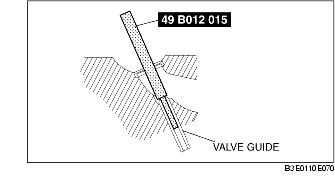
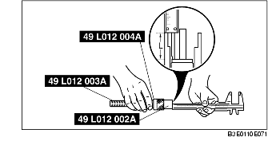
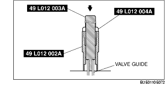

Removal
1. Remove the valve guide from the combustion chamber side using the SST.

Installation
1. Assemble the SSTs so that depth L is as specified.

-
Depth L
-
12.2-12.8 mm {0.49-0.50 in}
2. Tap the valve guide in from the camshaft side using the SSTs set in Step 1.
